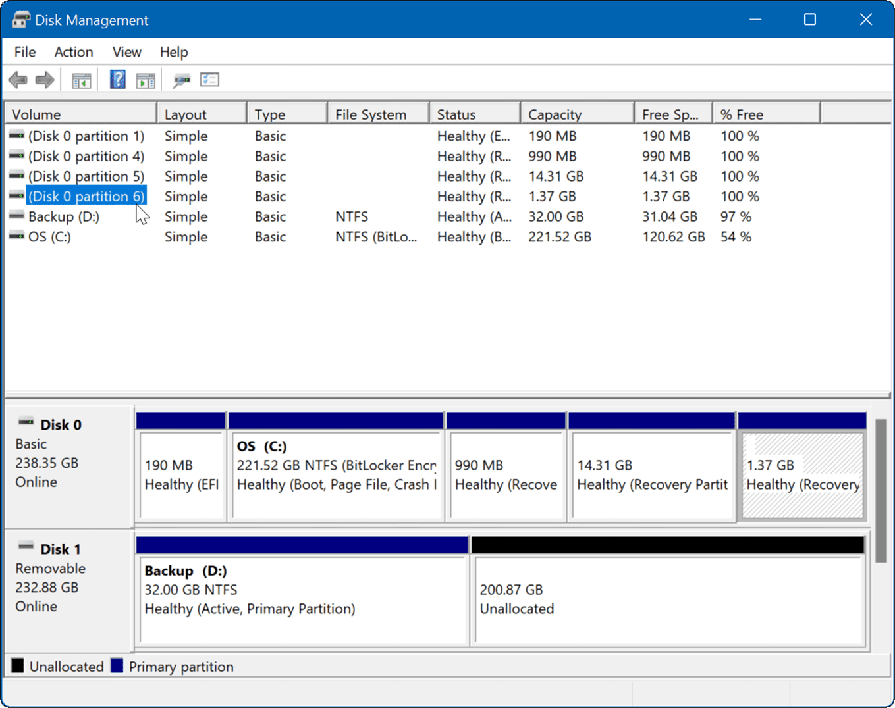
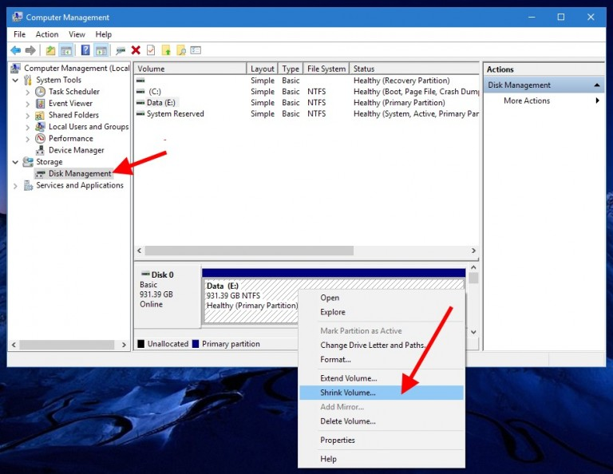
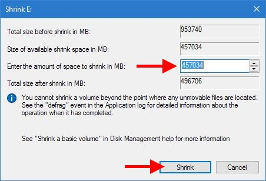
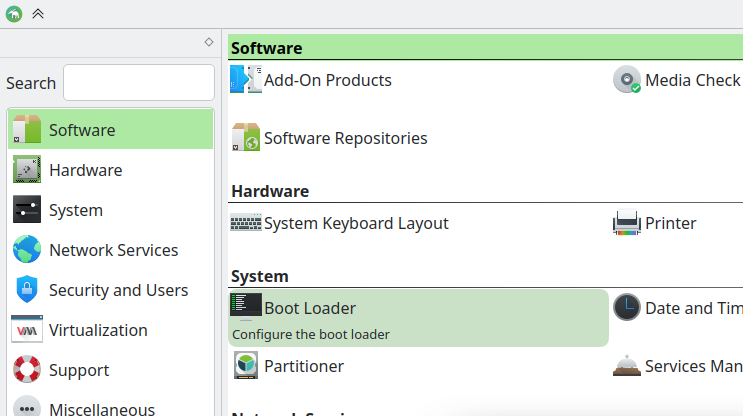
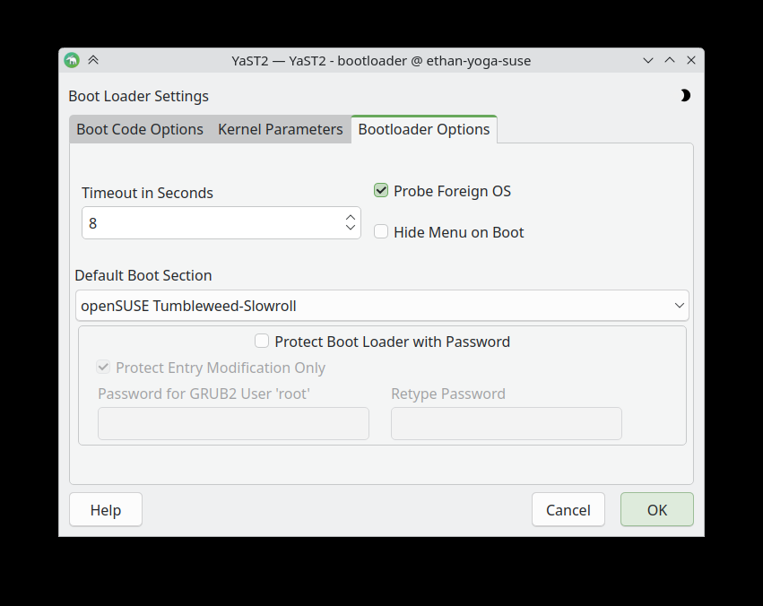

Installation¶
Have compatible hardware¶
Most laptops can run Linux, however, hardware such as the camera, keyboard, touchpad, etc can occasionally have problems, especially for rare laptops or very new laptops.
If you have an Intel or AMD CPU (this is called having an x86_64 CPU, also called an amd64 CPU (even if it was made by Intel)) and your laptop was released within the past two decades but not within the last year, it is extremely likely that it will work.
If you have an ARM CPU or are using a Mac, it will take a lot of work. We may be able to assist you; however it is possible we may not be able to install Linux.
Select a distribution¶
A Linux distribution provides a way to install Linux, install applications, and update your system. It also configures the software to be easy to use and work well together.
We currently recommend openSUSE Slowroll to new users, as we believe it is able to deliver a stable experience while providing the flexibility to install new software without fear of conflicts. However, there are many different distributions that you can install; please ask us for details.
Unlike on Windows or macOS, the boundary between applications and the OS is blurred. Some applications may need new libraries, which they may provide themselves or expect the OS to provide. Additionally, users often want new features from their desktop environments, which cannot be updated separately from the OS without causing serious issues. This is why we recommended a distribution with frequent updates.
We are able to support:
Debian and Ubuntu-based distributions – these are widely used and very stable, however the software provided is often out of date.
Debian releases the distribution every two years; Ubuntu releases every six months.
We do not recommend using Debian Testing or Unstable – although these are rolling releases, they break often and are intended for development of Debian only.
Linux Mint is a beginner-friendly distribution.
If your laptop was released in 2025, Debian likely does not support it; you may be unable to get it to boot or to be able to use any graphical applications since your graphics card may be too new to be supported.
Arch Linux
We do not recommend this for newcomers
If you want to heavily customize your installation and/or want to learn deeply how Linux works, you can use Arch
Cinna has a lot of experience and can help you; the Arch community is also very helpful
openSUSE
There are three release channels
Tumbleweed releases every day, but unlike Arch has automated tests to prevent your system from breaking.
Slowroll releases every month, after a week of testing the version in Tumbleweed. Throughout the month they release small bugfixes and security fixes. This is a good mix of stability and new software.
Leap releases every few years; we really do not recommend this.
Finally, there are a few systems that you may consider but we have less experience in:
Fedora
It releases every 6 months, but unlike Ubuntu will perform feature updates that aren’t major within each release
This is Mr. Campbell’s (our mentor) preferred distribution, but we do not have any other tech-savvy people who have experience with Fedora
Most of this guide appies to all distributions; however, we focus on openSUSE Slowroll.
Select a desktop¶
Epoch recommends KDE, since it is widely used and Epoch upperclassmen have a wide experience with it. KDE provides a high-quality and easy-to-use experience.
Flash the installation ISO¶
Please find a USB stick that you are fine with overwriting (and therefore losing all the data on it). It should have a decent amount of space; 12 GB is more than enough.
On a computer (this can be your current one), install a USB image flasher:
Windows: Rufus
macOS: USBImager
Linux: USBImager or Impression (Impression has a more GNOME-like interface)
Download the ISO image for your chosen distribution. For openSUSE Slowroll use this link:
https://download.opensuse.org/slowroll/iso/openSUSE-Slowroll-DVD-x86_64-Build37.3-Media.iso
For other distributions, visit the distribution’s website and find their download links. Ask another Epoch member for help, if you don’t know which ISO to choose.
Plug the USB stick into your computer. Now you can flash the installation ISO using the image flasher app you downloaded – open the app, select the ISO you downloaded, select which USB stick you want to flash it to, and click the button to start flashing.
Disable BitLocker¶
BitLocker protects your files on Windows from being viewed without your password. However, it will lock your files if it detects a change on your computer, such as installing Linux. In some cases, it might be difficult to recover from this.
Please see the following support article:
https://www.asus.com/us/support/faq/1047461/
Shrink your Windows partition¶
If you can, please ask an Epoch member for help on this step.
In Windows, open the Start menu and search for “Disk Management”. You should find this app available:

Right-click your C: drive and click “Shrink Volume”:

This should pop up a “Shrink” window:

Enter the amount of space you need to shrink it, and then shrink.
Linux typically requires around 20 GB to install a basic system, a desktop, and programs that you may commonly need. However, we recommend 100 GB dedicated to Linux.
Final preparation¶
Reboot into Windows, to make sure that everything still works.
Change BIOS settings¶
Reboot your computer, with your USB stick still plugged in. As soon as it starts booting, try pressing a key like F2, F10, F12, or Esc. If it doesn’t work, reboot and try another one of the above keys. If you still can’t get it to work, look up how to access the BIOS settings on your computer’s model.
You should eventually end up in a configuration page, known as the “BIOS settings”.
Disable Secure Boot¶
Secure Boot prevents operating systems or drivers that are not trusted by Microsoft from being run on your computer. When installing Linux, it is usually necessary to disable Secure Boot. If your distribution supports Secure Boot you can enable Secure Boot again after installation, to make it harder for malware to modify your operating system.
You should be able to find the appropriate option.
If you need more help, view the support article:
https://learn.microsoft.com/en-us/windows-hardware/manufacture/desktop/disabling-secure-boot?view=windows-11
Set boot order¶
There is usually a way to set the boot order. Put your USB stick at the top of the list.
Save changes¶
There will be a key that you can press to save changes. Press that key and confirm your changes.
Boot into the installer¶
Reboot into the installer, and follow the instructions. Ask an upperclassman for help.
A few things you should configure:
Do not set a password for the root user. Otherwise, it will be difficult to use
sudo.Use LVM (Logical Volume Manager). This will make it easier to add more space if you run out of disk space.
Use the filesystem which is default on the installer. On openSUSE, this is
btrfs, which will allow you to easily roll back if you run and update and it causes issues. Most other systems useext4.
Warning: When installing openSUSE, you MUST use the Guided Partitioner; do not accept the default partitioning scheme.
Reboot into Linux¶
At the end of the installation, it will ask you to reboot. Click the button to reboot.
It should reboot into Linux. If it boots into your USB stick, shut down, unplug the USB stick, and try again. If it boots into Windows, go back to the BIOS settings and put Linux at the top of the boot order.
Codecs (openSUSE)¶
Due to patent issues, openSUSE does not ship codecs (which allow you to decode and encode videos and audio files like .mp4, .webm, etc). You can set up codecs from an external repository called “Packman”, by running the following commands in the terminal:
# Change this to Tumbleweed if you're on Tumbleweed
sudo zypper addrepo -cfp 90 'https://ftp.gwdg.de/pub/linux/misc/packman/suse/openSUSE_Slowroll/' packman
sudo zypper refresh
sudo zypper install --allow-vendor-change --from packman ffmpeg gstreamer-plugins-{good,bad,ugly,libav} libavcodec vlc-codecs
Note: You can access the terminal via the “Konsole” app on KDE.
Reconfiguring GRUB boot order¶
It might be the case that you don’t need to use Linux most of the time. In that case, it may be annoying to have to use the arrow keys to select Windows every time you boot up.
Using YaST (openSUSE)¶
In your app launcher, search for “YaST”. Enter your password when prompted, then click on “Boot Loader”:

Then, go to “Bootloader Options” where you can configure the default OS and the timeout for selecting a different OS:

Press “OK” to save your changes and exit.
Doing it manually¶
You need to edit the file /etc/default/grub and then run the command sudo update-grub.
See the following article for more details:
https://www.howtogeek.com/196655/how-to-configure-the-grub2-boot-loaders-settings/